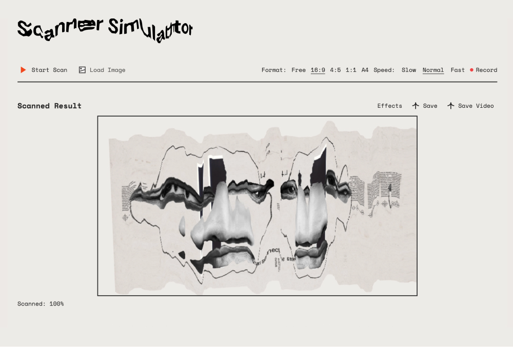
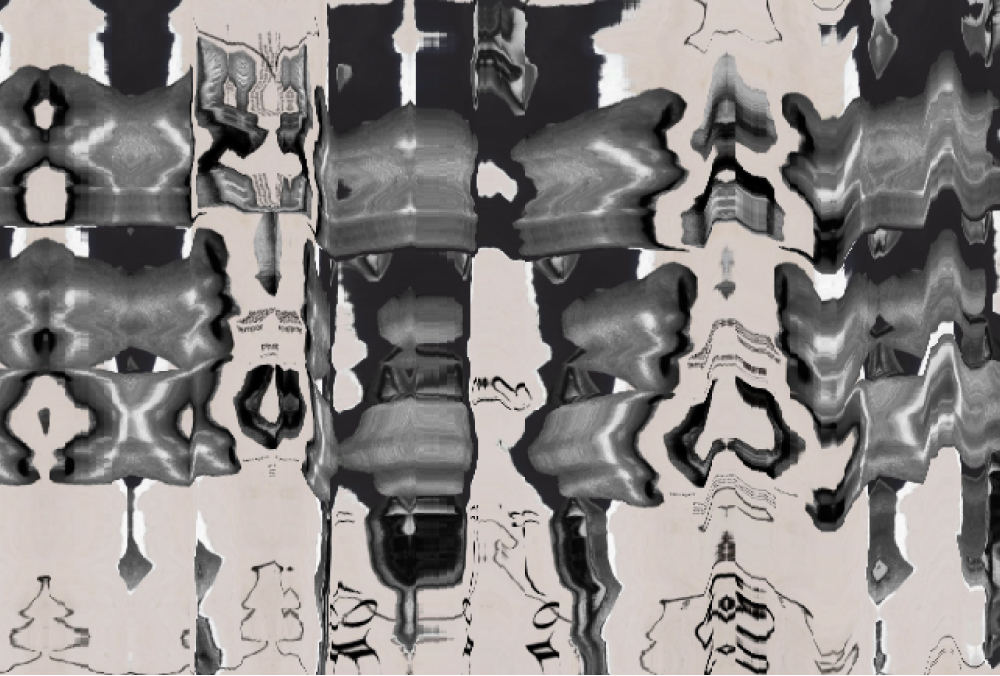
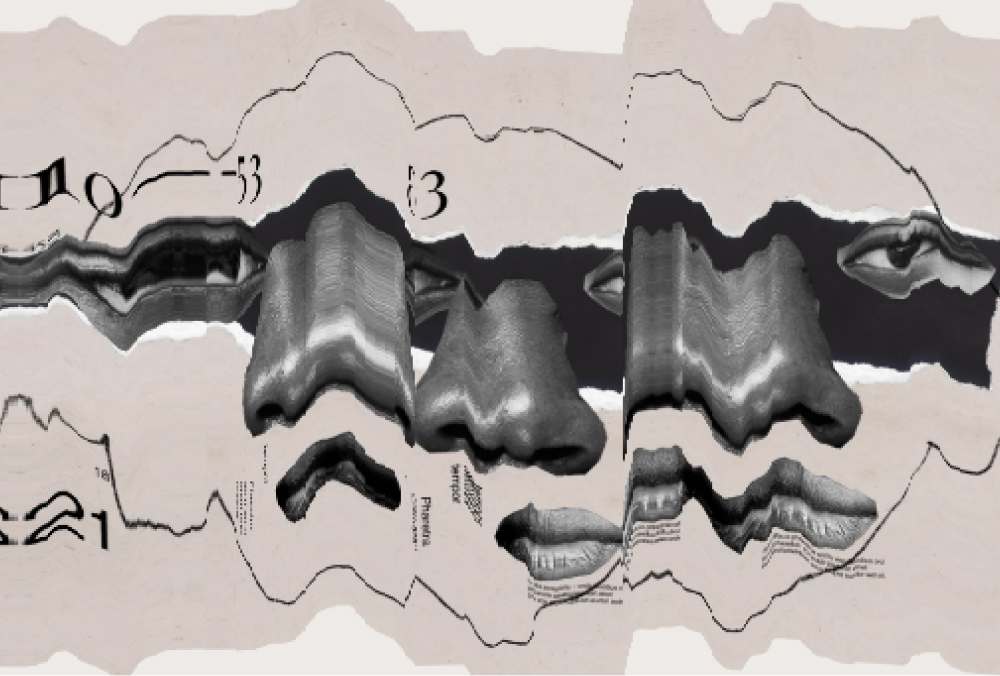
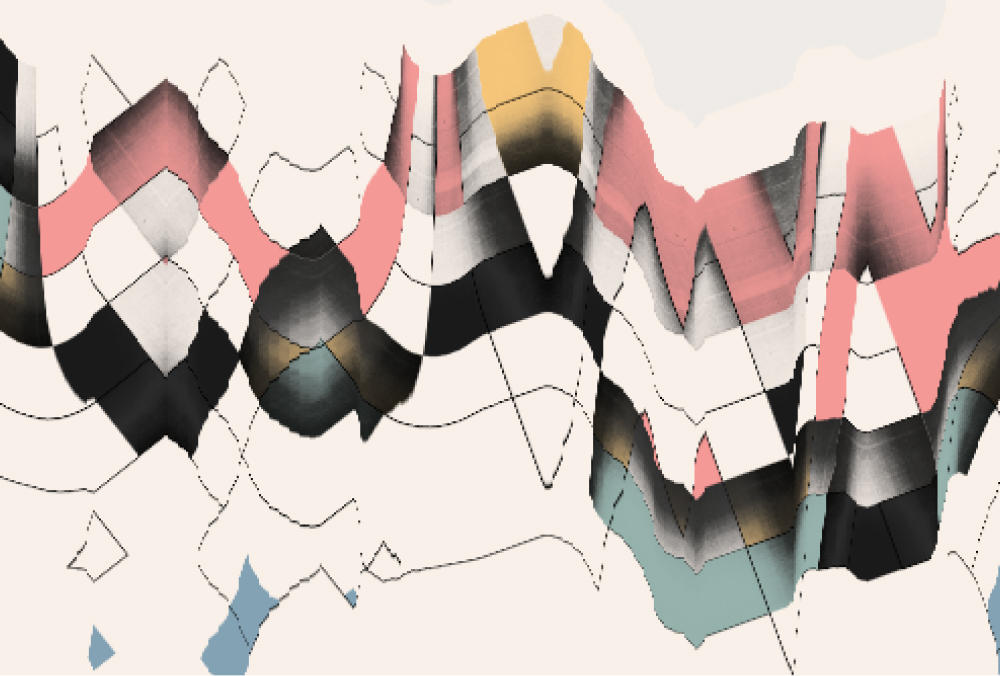

Scanner Simulator
An artistic take on the flatbed scanner. Load an image, choose a scan speed, then drag and rotate it under the moving scan head — the result captures the smearing, tearing and glitches you get when something moves mid-scan.
Pick an aspect ratio for the output, record the process as you play, and apply a handful of effects on top to push the final image further.



